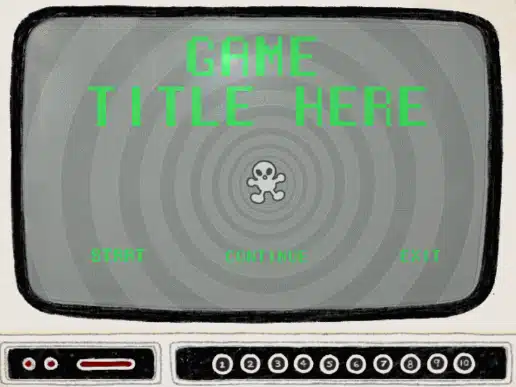
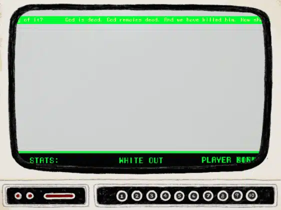
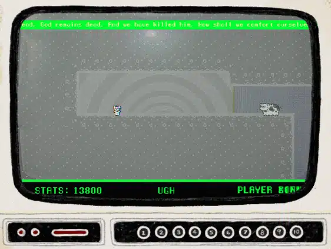
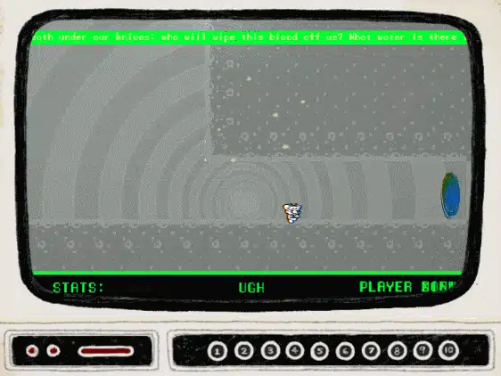
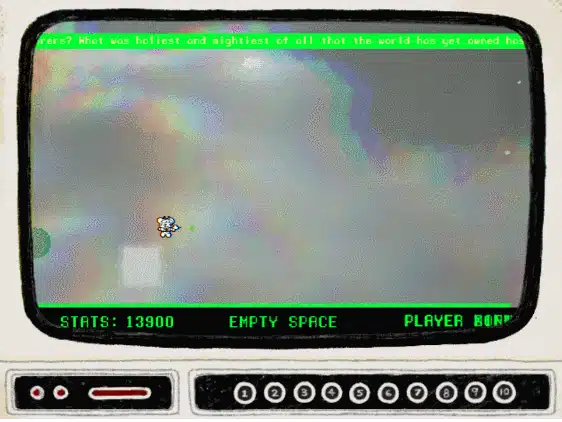
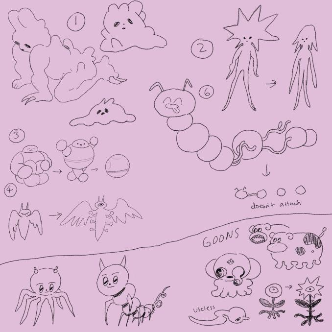

Year: 2021
Role: Programmer
Tech: Unity, C#
Platforms: PC/WebGL
A trippy shooter-platformer on a news channel inside your telivision.
Art by Mono
I worked on this for Unexpected jam 2020, We couldnt finish it for the jam. The plan is to slowly work on it over the next few months.
Update (march 2021) Ive finished a playable version of the game.

Initially the main mechainics we just jumping and shooting.Which made the game really basic and boring. Which is why I was not been able to make much progress the last few months.

I was playing around with the controls and thought it would be interesting if you could control the bullet after shooting. So that was the main thing for a month, you would try to shoot things at weird places buy maneuvering the bullet over there.

Then one day on a sudden impulse I thought it would be interesting if after shooting with X key, if you hold onto it you can control the bullet but after releasing it the player character gets teleported to that position.

This turned out to be really interesting and ended up being the main mechanic as it created some interesting scenarios/puzzles. So the whole game now revolves around it.

Also here is a look at the initial designs for the enemies.

Please give it a play if you thing it looks interesting. Here's the link.